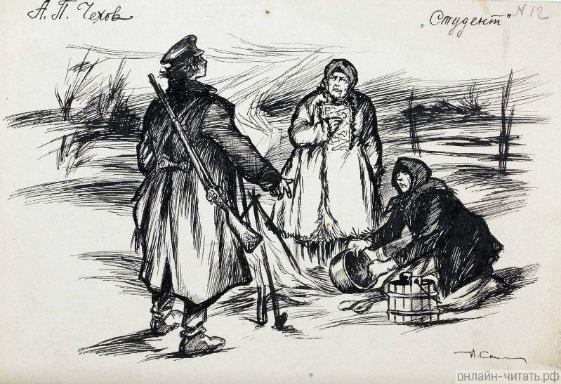

Биография
Антон Чехов родился в большой семье в Таганроге. Его отец, Павел Егорович, сначала гонял продавать быков из Воронежской губернии в Москву, а в 1858 году стал купцом третьей гильдии. В браке с Евгенией Морозовой у них родилось шестеро детей, сам Антон был третьим.
Обстановка в доме Чеховых была строгой: детям не позволяли бездельничать. Ежедневно в пять часов утра братья пели в церковном хоре, а после школы помогали отцу в бакалейной лавке. Все дети должны были изучать ремесло: Антон, например, познавал профессию портного. Мать же учила детей быть отзывчивыми, уважать и поддерживать слабых, любить природу и окружающих.
Учиться будущий писатель начал в 1868 году в таганрогской гимназии. Там он взял литературный псевдоним Чехонте, по прозвищу, которое дал ему один из учителей. В 13 лет Чехов впервые побывал в театре, где шла оперетта французского композитора Жака Оффенбаха «Прекрасная Елена». Именно тогда Чехов полюбил сцену и литературу.
В 1876 году Чехов-старший разорился, и вся семья уехала в Москву. Шестнадцатилетний Антон, завершавший обучение в гимназии, остался один и занимался репетиторством, чтобы заработать себе на жизнь. В эти годы он много читал, писал очерки для гимназических журналов, а журнал «Заика» с короткими зарисовками из таганрогской жизни отправлял братьям в Москву. Тогда же Чехов написал первую пьесу — «Безотцовщина» и водевиль «Недаром курица пела».
В 1879 году Чехов окончил гимназию и уехал из Таганрога в Москву. Там он начал заботиться о семье, обеспечивал близких на скромный доход от литературных публикаций. Дебют Чехова в печати состоялся в декабре того же года: в журнале «Стрекоза» были опубликованы рассказ «Письмо к ученому соседу» и юмореска «Что чаще всего встречается в романах, повестях и т. п.».
В этом же году Чехов поступил на медицинский факультет Московского университета имени И.М. Сеченова. Студент-медик жил у брата Ивана в подмосковном Воскресенске (сегодня город Истра). Там же в 1881 году он познакомился с заведующим Воскресенской земской больницей, доктором Павлом Архангельским. Еще во время учебы Чехов принимал больных, здесь же прошел практику, а после окончания университета остался работать уездным врачом. Летом 1884 года он перешел на должность заведующего звенигородской больницей.
Занятия в университете Антон Чехов совмещал с постоянной литературной работой. В основном он публиковался под псевдонимом Антоша Чехонте, позднее появились «Врач без пациентов», «Дяденька», «Человек без селезенки», «Балдастов», «Антонсон», «Брат моего брата» — всего около пятидесяти.
Чехов печатался в московских юмористических журналах «Будильник», «Зритель», «Осколки», сотрудничал с «Петербургской газетой», газетой «Новое время» и «Русскими ведомостями». В 1882 году писатель завершил работу над первым сборником рассказов «Шалость», но в печать он так и не вышел, вероятно из-за финансовых проблем. Первый сборник Чехова, «Сказки Мельпомены», увидел свет в 1884 году.
К 1885 году Чехов был уже популярным автором малых рассказов. Но в его литературный путь вмешался писатель Дмитрий Григорович, который раскритиковал молодого человека за растрату своего таланта. С таким мнением были согласны многие ведущие авторы и критики тех лет.
Но именно благодаря одному из критиков, издателю Алексею Суворину, Чехов смог раскрыть свой потенциал. В журнале Суворина «Новое время», с которым начал сотрудничать Чехов, авторам платили приличный гонорар, не ограничивали их ни по времени создания работ, ни по количеству слов. Именно в это благоприятное для писателя время вышли одни из его лучших работ: «Панихида», «Враги» , «Агафья», «Кошмар» и другие — и появился чеховский рассказ как новое явление в русской литературе. В «Новом времени» Антон Чехов впервые начал подписывать тексты собственным именем.
Произведения
Иллюстрации к произведениям:
-
Анна на шее
-
Степь
-
Степь
-

Студент
-

Человек в футляре
-
Человек в футляре
Тест на знание А.П. Чехова
Пройти тест«После Москвы я больше всего люблю Таганрог» А.П. Чехов
Теплое Азовское море, богатые степные земли с древних времен привлекали поселенцев. Кочевые племена, греческие колонии охотно заселяли берега Меотиды (так в древности именовали Азовское море) более 2-х тысяч лет тому назад. Об этом упоминает в своих трудах древнегреческий историк Геродот. Самые древние находки датируются 400 тыс. лет до н.э. По последним данным археологов под водой акватории Таганрогского залива находится исчезнувший греческий город Кремны (6-7 века до н.э.). В те далекие времена по представлению эллинов на территории нынешнего Таганрога жили мифические аримасты, гипербореи, грифоны и воинственные амазонки, которые, по рассказам Геродота, избежав греческого плена после поражения в битве при Фермодонте, прибыли к «земле свободных скифов» - к берегам «Меотийского озера – к Кремнам».
Основание Таганрога непосредственно связано с деятельностью Петра I.
Строительство первой военно-морской базы на Азовском море имело огромное значение, т.к. давало России возможность утвердиться в Приазовье и получить выход к южным морям. Кроме того, Таганрог стал одним из первых русских городов, строительство которого велось по регулярному плану, который создавался при непосредственном участии Петра I. Санкт-Петербург, основанный на 5 лет позже нашего города, застраивался по тому же принципу.
Город-крепость Троицкая на Таганьем роге был построен к 1709 году. В этом же году Петр больше месяца находился в Таганроге и лично руководил работами. К сожалению, по условиям Прутского мирного договора с Турцией в 1712 году город был разрушен. Более 50 лет Таганрог пролежал в руинах и вторым своим рождением обязан императрице Екатерине Великой. В 1769 году полуостров вновь был занят русскими войсками, и вошёл в состав России по Кючук-Кайнарджийскому миру 1774 года. Восстановлением крепости и гавани, созданием Азовского флота руководил известный русский адмирал А.Н. Сенявин. После основания Севастополя, Таганрог утратил значение военно-морской базы и с 1780-х годов развивался как крупный внешнеторговый порт. Именно ему принадлежало первенство в установлении экономических связей России с зарубежными странами через южные моря.
С 1802 по 1887 гг. Таганрог был центром градоначальства - в городе находилось 17 иностранных консульств. В 1808 году указом Александра I был утверждён герб Таганрога, - один из первых городских гербов на юге России. Особая страница истории Таганрога XIX века связана с пребыванием в городе императора Александра I. Именно по его разрешению в городе было введено градоначалие, создан Таможенный округ. Император провёл в Таганроге последние месяцы своей жизни и скончался здесь 19 ноября 1825 года. В Таганроге был установлен памятник Александру I работы скульптора И.П. Мартоса, После революции был демонтирован и переплавлен. К 300-летию основания Таганрога памятник был воссоздан и установлен на прежнем месте. На протяжении всего XIX века Таганрог играл значительную роль в развитии южно – русской морской торговли.
Инициатива А.П. Чехова
Готовясь к 200-летию со дня основания Таганрога, городская Дума приняла решение увековечить память об основателе Таганрога. Инициатива создания памятника Петру I принадлежит нашему великому земляку А.П. Чехову. Памятник был установлен 14 мая 1903 года.
В 19 с половиной лет Чехов покинул Таганрог, но никогда о нем не забывал, его стараниями пополнялась городская библиотека, музей, была открыта первая общественная аптека. Центральная улица города носит имя его основателя, это одна из самых старинных и красивых улиц города.
Чехов в Таганроге
В Таганроге есть несколько мест, непосредственно связанных с писателем: Домик Чехова и Лавка Чехова, которые сейчас являются действующими музеями. Сохранилась также гимназия, в которой учился будущий мастер рассказа.
Не лишним будет посетить библиотеку имени А.П. Чехова и театр, и театр, в котором при жизни Чехова, как драматурга, ставились его пьесы. В Таганроге много памятников писателю и скульптурных композиций связанных с его творчеством.